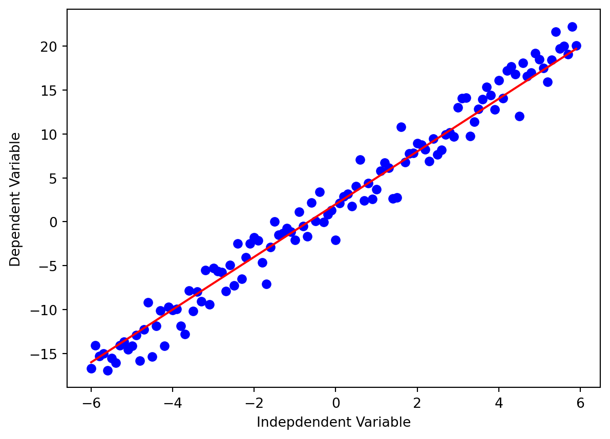

import pandas as pd #Data manipulation
import numpy as np #Data manipulation
import matplotlib.pyplot as plt # Visualization
import seaborn as sns #VisualizationContents:
What Is Nonlinear Regression?
Comparison to Linear Regression.
Example of Nonlinear Regression.
Example of Nonlinear Regression with GDP dataset.
Data Visualization
Model Implementation
What Is Nonlinear Regression? Comparison to Linear Regression

Nonlinear regression is a statistical technique used to model data by expressing it as a mathematical function. Unlike simple linear regression, which uses a straight line to relate two variables (X and Y), nonlinear regression captures more complex, curved relationships between these variables.
The main objective of nonlinear regression is to minimize the sum of squared differences between the observed Y values and the predictions made by the nonlinear model. This sum of squares serves as a measure of how well the model fits the data points. To compute it, we calculate the differences between the fitted nonlinear function and each data point’s Y value, square these differences, and then sum them up. A smaller sum of squared differences indicates a better fit of the model to the data.
Nonlinear regression employs various mathematical functions such as logarithmic, trigonometric, exponential, power functions, Lorenz curves, Gaussian functions, and other fitting techniques to capture the underlying relationships in the data.
Key Notes:
Linear and nonlinear regression are methods for predicting Y values based on an X variable (or multiple X variables).
Nonlinear regression involves using a curved mathematical function of X variables to make predictions for a Y variable.
Nonlinear regression can be employed to model and predict population growth trends over time.
Nonlinear regression modeling and linear regression modeling both aim to visually represent a specific response based on a set of variables. Nonlinear models are more intricate to construct compared to linear models because they involve approximations, often through trial-and-error iterations. To determine the underlying relationships in your data, you can use curve estimation procedures to choose the appropriate regression model, be it linear or nonlinear. Linear regression models, typically represented as straight lines, can also exhibit curves depending on the specific linear equation used. Additionally, it’s possible to apply algebraic transformations to make a nonlinear equation resemble a linear one, termed as an “intrinsically linear” nonlinear equation.
Example of Nonlinear Regression
I.Introduction
If the data shows a curvy trend, then linear regression will not produce very accurate results when compared to a non-linear regression because, as the name implies, linear regression presumes that the data is linear.
Importing required libraries
1. Linear
x = np.arange(-6.0, 6.0, 0.1)
y = 3*(x) + 2
y_noise = 2 * np.random.normal(size=x.size)
ydata = y + y_noise
#plt.figure(figsize=(8,6))
plt.plot(x, ydata, 'bo')
plt.plot(x,y, 'r')
plt.ylabel('Dependent Variable')
plt.xlabel('Indepdendent Variable')
plt.show()
2. Polynomial
x = np.arange(-6.0, 6.0, 0.1)
y = 1*(x**3) + 2*(x**2) + 1*x + 3
y_noise = 20 * np.random.normal(size=x.size)
ydata = y + y_noise
plt.plot(x, ydata, 'bo')
plt.plot(x,y, 'r')
plt.ylabel('Dependent Variable')
plt.xlabel('Indepdendent Variable')
plt.show()
3. Quadratic
x = np.arange(-6.0, 6.0, 0.1)
y = np.power(x,2)
y_noise = 2 * np.random.normal(size=x.size)
ydata = y + y_noise
plt.plot(x, ydata, 'bo')
plt.plot(x,y, 'r')
plt.ylabel('Dependent Variable')
plt.xlabel('Indepdendent Variable')
plt.show()
4. Exponential
X = np.arange(-6.0, 6.0, 0.1)
Y= np.exp(X)
plt.plot(X,Y)
plt.ylabel('Dependent Variable')
plt.xlabel('Indepdendent Variable')
plt.show()
5. Logarithmic
X = np.arange(1.0, 10.0, 0.1)
Y = np.log(X)
plt.plot(X,Y)
plt.ylabel('Dependent Variable')
plt.xlabel('Indepdendent Variable')
plt.show()
6. Sigmoidal/Logistic
X = np.arange(-5.0, 5.0, 0.1)
Y = 1-4/(1+np.power(3, X-2))
plt.plot(X,Y)
plt.ylabel('Dependent Variable')
plt.xlabel('Indepdendent Variable')
plt.show()
Non-Linear Regression example with Dataset
df1 = pd.read_csv('/home/tpriya/CS5525/MLBlog/posts/nlinregression/gdp.csv')
df1.head()
df = pd.read_csv('/home/tpriya/CS5525/MLBlog/posts/nlinregression/gdp1.csv')
print('\nNumber of rows and columns in the data set: ',df.shape)
print('')
#Lets look into top few rows and columns in the dataset
df.head()
Number of rows and columns in the data set: (55, 2)
| Year | Value | |
|---|---|---|
| 0 | 1960 | 5.918412e+10 |
| 1 | 1961 | 4.955705e+10 |
| 2 | 1962 | 4.668518e+10 |
| 3 | 1963 | 5.009730e+10 |
| 4 | 1964 | 5.906225e+10 |
plt.figure(figsize=(8,5))
x_data, y_data = (df["Year"].values, df["Value"].values)
plt.plot(x_data, y_data, 'ro')
plt.ylabel('GDP')
plt.xlabel('Year')
plt.show()Choosing a model
From an initial look at the plot, we determine that the logistic function could be a good approximation, since it has the property of starting with a slow growth, increasing growth in the middle, and then decreasing again at the end; as illustrated below:
X = np.arange(-5,5.0, 0.1)
Y = 1.0 / (1.0 + np.exp(-X))
plt.plot(X,Y)
plt.ylabel('Dependent Variable')
plt.xlabel('Indepdendent Variable')
plt.show()Building The Model
Now, let’s build our regression model and initialize its parameters.
def sigmoid(x, Beta_1, Beta_2):
y = 1 / (1 + np.exp(-Beta_1*(x-Beta_2)))
return y
beta_1 = 0.10
beta_2 = 1990.0
#logistic function
Y_pred = sigmoid(x_data, beta_1 , beta_2)
#plot initial prediction against datapoints
plt.plot(x_data, Y_pred*15000000000000.)
plt.plot(x_data, y_data, 'ro')# Lets normalize our data
xdata =x_data/max(x_data)
ydata =y_data/max(y_data)from scipy.optimize import curve_fit
popt, pcov = curve_fit(sigmoid, xdata, ydata)
print(" beta_1 = %f, beta_2 = %f" % (popt[0], popt[1])) beta_1 = 690.451709, beta_2 = 0.997207x = np.linspace(1960, 2015, 55)
x = x/max(x)
plt.figure(figsize=(8,5))
y = sigmoid(x, *popt)
plt.plot(xdata, ydata, 'ro', label='data')
plt.plot(x,y, linewidth=3.0, label='fit')
plt.legend(loc='best')
plt.ylabel('GDP')
plt.xlabel('Year')
plt.show()
# split data into train/test
msk = np.random.rand(len(df)) < 0.8
train_x = xdata[msk]
test_x = xdata[~msk]
train_y = ydata[msk]
test_y = ydata[~msk]
# build the model using train set
popt, pcov = curve_fit(sigmoid, train_x, train_y)
# predict using test set
y_hat = sigmoid(test_x, *popt)
# evaluation
print("Mean absolute error: %.2f" % np.mean(np.absolute(y_hat - test_y)))
print("Residual sum of squares (MSE): %.2f" % np.mean((y_hat - test_y) ** 2))
from sklearn.metrics import r2_score
print("R2-score: %.2f" % r2_score(y_hat , test_y) )Mean absolute error: 0.04
Residual sum of squares (MSE): 0.00
R2-score: 0.97